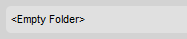

The Status Bar is the section at the bottom of the CKFinder interface that displays information about the selected file, the total number of files in the folder, etc.
If a file is selected in CKFinder, the Status Bar will display detailed information about that file, including the file name, its size, and the data of its last modification. For example:

If no files are selected, the Status Bar will instead display the total number of files in the current folder. For example:

If the folder is empty, the Status Bar will display an appropriate message. For example:
